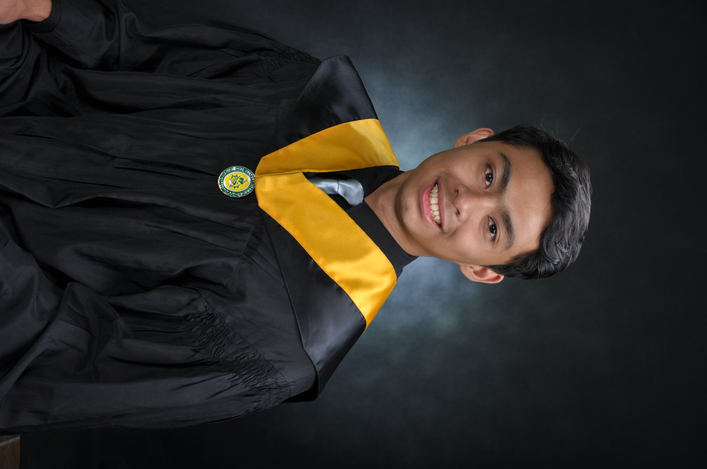

Ted Michael D. Ganaban
Videographer, Video Editor, Photographer and Web Developer

About me
I'm a Photographer/Videographer/Video Editor/Wed Developer and a graduate of
FEU - Institute of Technology with a degree in Bachelor of Science in Information
Technology with Specialization in Digital Arts.
I am a former member of FEU Tech's official publication, The Innovator. My experience with
the publication has helped hone my skills and interest in photography and videography.
Eductation:
FEU - Institute of Technology (2015-2019)
BS - Information Technology with Specialization in Digital Arts.
My Work Experience:
- Summit Media - Story Labs (2018)
- as a Graphic Designer and Production Intern
- Go Motion Productions (2019)
- as a Production and Post Production Intern
- Freelance Photographer/Video Editor (2019 - 2020)
- Studio King (2020-2022)
- Triple NM Marketing Surigao Branch (2022 - 20204)
- Nouss Digital (2024 - Present)
- Sideloom Visuals (2024 - Present)
- a Self Owned Video Production Team
Editing Softwares:
- Davinci Resolve
- Adobe Premier Pro
- Adobe Lightroom
- Adobe Photoshop
- Visual Studio Code